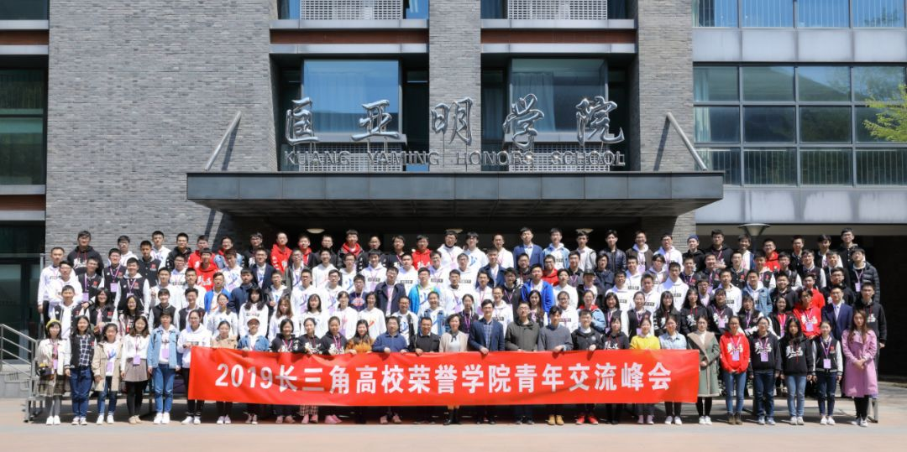

发布时间:2019-04-02
少年逐远梦，匡士筑桢才|四校交流活动圆满结束
2019年3月30日及31日，在少年班学院分团委书记唐宁老师和少年班班主任代镭老师带领下，36名少院学生来到南京大学匡亚明学院，参加一年一度的长三角高校荣誉学院青年交流峰会。
除中国科学技术大学少年班学院、南京大学匡亚明学院之外，一同参加峰会的还有浙江大学竺可桢学院、上海交通大学致远学院。峰会在四校轮流召开，明年将由少年班学院举办。
2019年3月30日上午11时，与会学生乘坐高铁来到风景如画的南京大学。同学们在两位匡院学生会的工作代表的陪伴下简要参观南大校园，大家亲切交流，一路上充满了欢声笑语。

同学们签到并领取纪念品
匡院学生代表
参观校园
30日下午14时许，本次峰会开幕式在匡亚明学院举行。开幕式上，匡亚明学院领导首先致辞，欢迎四校学生齐聚南大，参加本次盛会。他讲述了四校之间由来已久的深情厚谊和合作历史，并表示希望未来能有更多交流。
匡亚明学院领导讲话
随后是三校领导老师讲话。我校唐宁老师首先祝贺四校交流来到第四个年头，标志着四校之间的合作交流不断加深、巩固。他又谈起四校合作的四川支教活动，对同学们的毅力和凝聚力感慨颇深，并期待日后会有更多交流活动。来自浙江大学竺可桢学院、上海交通大学致远学院的老师也先后做了讲话。
唐宁老师讲话
此后是学生会代表讲话环节。我院学生会主席汪艺塍先简要介绍了中科大发展史和少院历史，又着重介绍少院学生会的组织架构和工作思路，包括过去一年开展的多姿多彩的文化体育活动，最后感谢匡院同学热情接待，祝愿四校学子友谊长青。随后三校学生会代表先后发言，并预祝此次峰会取得成功。
汪艺塍同学发言
下午16时，同学们分别前往各分会场进行工作交流和讨论。本次讨论共设置主席团、文体活动、外联内建、学术创新、权益志服和媒体宣传六个分会场。在讨论会上，各学院部门负责人向大家介绍了人员架构和工作经验，并由同学们自由讨论，解决遇到的问题。会场气氛热烈，同学们各抒己见，取长补短。

<< 滑动查看下一张图片 >>
31日上午9时，同学们从匡院院楼出发，进行趣味与挑战并存的定向越野活动。在参加游戏的过程中，大家交流沟通，增进了解，互帮互助，团结如一。校园里充满了欢声笑语，在大家心中留下了难忘的回忆。
“听歌识曲”游戏
同学们在游戏中
上午10时许，同学们结束游戏，来到报告厅，参加2019年长三角高校荣誉学院青年交流峰会闭幕式。
闭幕式上，首先是30日讨论会总结报告。各分会场均派出一名代表向大家简要讲解讨论情况，提取关键词进行解释，并总结优秀经验，展示交流成果。我校娄晗歆同学代表外联内建分会场发言，孙树文同学代表学术创新会场发言，陈心安同学作为我院学生会轮值主席发言。
娄晗歆同学发言
孙树文同学发言
陈心安同学发言
随后，进行定向越野“一呼百应”颁奖仪式。
仪式后，匡亚明学院党委书记乔蔚虹教授讲话，庆祝本次峰会圆满成功。
乔蔚虹教授讲话
临近尾声，匡亚明学院学生会主席张荣朗沐和少年班学院学生会主席汪艺塍进行交接仪式，青年交流峰会的旗帜从匡亚明学院传到了少年班学院。一则“少院八分钟”视频，展现了少院人对于即将到来的交流活动的期待与热情。
交接仪式
少院八分钟
结尾，四校逐一唱起校歌，歌声悠扬，回荡在会场上空，恰似四校间牢不可破的深情厚谊，永驻心田。

明年，长三角高校荣誉学院青年交流峰会将会来到科大少院，我们将以饱满的热情迎接远道而来的朋友们！
by.SCGY-SU

编辑：宣传部 紫萸香慢